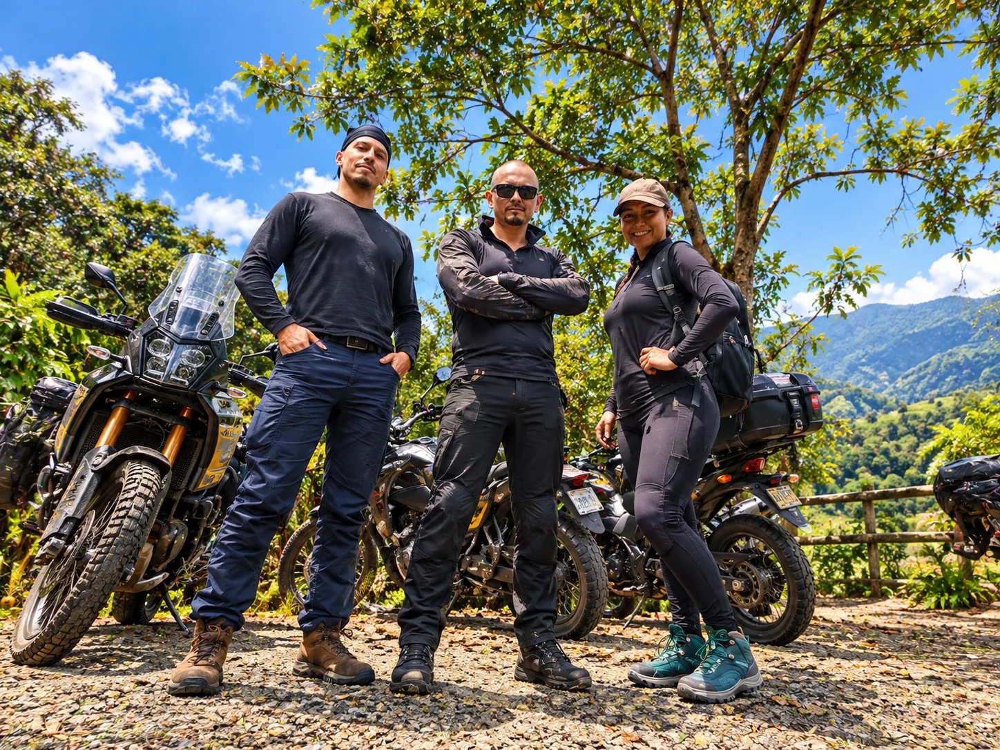

Motos y comparativos
Modelos, segmentos, fichas técnicas y experiencia de uso. Comparar antes de enamorarse.


Motos, historias reales y opinión sin libreto.
El canal para quienes aman las motos, pero también las cuestionan. Comparamos, probamos y hablamos de precios, garantías, equipos, viajes e historias reales.
MOTOCICLISMO · COLOMBIA · CULTURA MOTERA
PDAM observa el mundo de las dos ruedas desde el lugar del motociclista: el que compra, compara, pregunta, se equipa, sale a rodar y tiene algo que decir cuando vuelve.
EL MOTOR ES EL MISMO. LOS TEMAS, NO.
PDAM es un canal independiente sobre el mundo de las motos. Aquí caben los viajes, sí, pero también las preguntas que aparecen antes y después de comprar una: qué ofrece, cuánto cuesta, qué falla, para qué sirve un accesorio y qué cuentan de verdad quienes la usan. La carretera es parte de la historia; no es la única historia.
Modelos, segmentos, fichas técnicas y experiencia de uso. Comparar antes de enamorarse.
Precios en Colombia, diferencias entre mercados y decisiones de compra. La cuenta también importa.
Lo que cubre la garantía, lo que no, mantenimientos y problemas que vale la pena conocer.
Equipamiento, accesorios, cámaras, navegación y productos puestos a trabajar en el mundo real.
Rutas, destinos, alojamientos, restaurantes y experiencias vistas desde el asiento de la moto.
Personajes, costumbres, conversaciones y situaciones de la vida en dos ruedas.
Con humor, datos y preguntas directas. Hablamos como motociclistas, no como un catálogo. Si una moto cuesta una fortuna, una garantía deja dudas o un accesorio promete milagros, lo ponemos sobre la mesa. Y si el camino nos lleva a un buen plato de carretera, también se cuenta.
CONVERSACIONES QUE YA HACEN PARTE DEL CANAL
UNA COMUNIDAD QUE PREGUNTA, COMPARA Y RUEDA
PDAM conecta con motociclistas interesados en entender mejor sus motos, tomar decisiones de compra, conocer equipos, descubrir lugares y compartir experiencias. La comunidad se mueve entre formatos y plataformas; cada red tiene su propio público y su propia conversación.
Datos consultados el 10 de noviembre de 2026 en las cuentas de YouTube y Facebook conectadas. Las cifras son indicadores propios de cada plataforma; no se suman como personas únicas.

A motociclistas y personas interesadas en el universo de las dos ruedas: quienes están buscando su primera moto, quienes comparan antes de cambiarla, quienes viajan, se equipan, preguntan por garantías o simplemente disfrutan conversar de motos con humor y criterio.
Motocicletas, accesorios, equipamiento, tecnología, talleres, tiendas, restaurantes, alojamientos, destinos y experiencias que tengan algo real que aportar al motociclista.
ALIANZAS PARA ENTRAR EN LA CONVERSACIÓN MOTERA
Buscamos colaboraciones con marcas, comercios, talleres, destinos y establecimientos que tengan algo relevante para quienes viven las motos. La idea es integrar la propuesta en contenidos que PDAM produce para su propia comunidad.
Una mención o segmento acordado dentro de un video de PDAM, conectado con el tema y con el interés de la audiencia.
Restaurantes, alojamientos, talleres, tiendas y destinos que podamos conocer e incorporar de manera natural al contenido.
Equipamiento, accesorios y tecnología puestos en contexto: qué hacen, cómo funcionan y qué vale la pena saber.
Encuentros, rodadas, lanzamientos y actividades que conecten con la cultura motociclista y la audiencia de PDAM.
PDAM no funciona como una productora que entrega videos institucionales o piezas por encargo para las redes de terceros. El contenido se crea, se narra y se publica para la comunidad de PDAM. Las integraciones comerciales se acuerdan con claridad y se identifican con transparencia; una marca puede participar en la historia, pero no imponer una opinión positiva ni decidir la conclusión.
HABLEMOS DE UNA COLABORACIÓN
WhatsApp: +57 324 592 9902
Correo: padondeapuntelamoto@gmail.com
YouTube: Pa' Donde Apunte la Moto
Cada propuesta se revisa según el formato, el contexto, la ubicación y el alcance acordado antes de grabar. PDAM / Colombia / 2026.